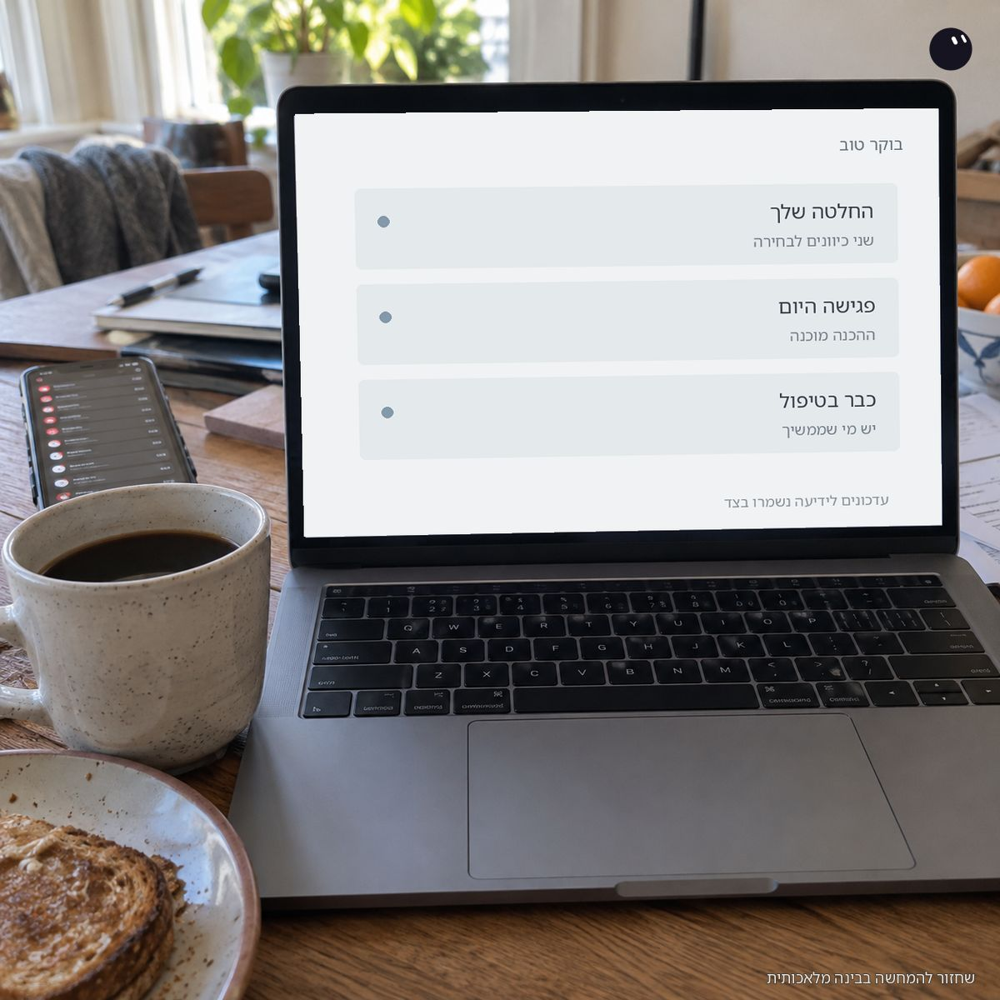

בריף הבוקר שלי מתחיל במה שאפשר להוריד ממני.
דבר שכבר יש לו בעלים נשאר אצלו. משהו שצריך החלטה שלי עולה אליי. לפגישה שצריך להתכונן אליה מחכה הכנה.
בכל בוקר עבודה Grok Bot קורא את המקורות שחיברתי ושולח הודעה אחת. אני יכול לענות: תכין אותי לפגישה הזאת. ומשם להמשיך.
אני לא רוצה לקרוא מחדש את כל מה שקרה בסלאק. אני רוצה לדעת במה להתחיל. אם ההודעה רק מעבירה את הערימה לצ'אט אחר, עוד לא פתרנו את הבעיה.
אגב יש לנו קבוצת וואטסאפ אם תרצו עזרה ביצירת בוט משלכם:
https://itzik-community-benefits.pages.dev/join
בריף הבוקר שלי מתחיל במה שאפשר להוריד ממני.
פורסם במקור ב LinkedIn
